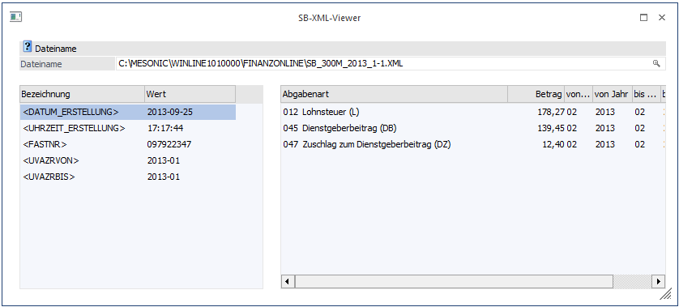
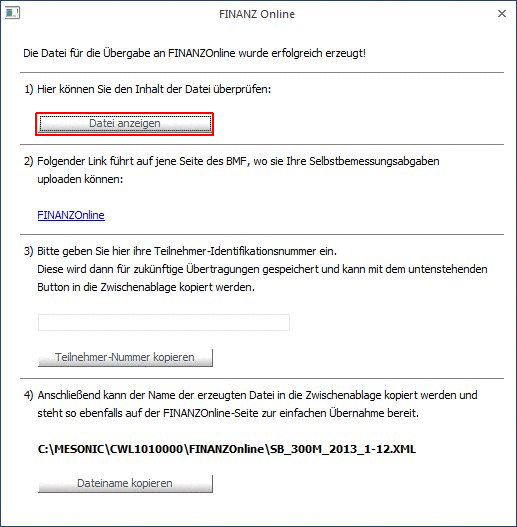

Der SB-XML-Viewer steht in der WinLine FIBU über den Menüpunkt
1 Auswertungen
1 Steuer-Meldungen
1 SB-XML-Viewer
oder im WinLine LOHN über den Menüpunkt
1 Abschluss
1 SB-XML-Viewer
zur Verfügung.
In diesem Menüpunkt können XML-Dateien, die mit Ausgabe der Selbstbemessungsabgaben erzeugt wurden, in "lesbarer" Form dargestellt werden.

Nach Eingabe des Dateinamens (der auch mittels Matchcode gesucht werden kann) werden in der Tabelle die Werte der allgemeinen "Tags" wie Erstellungsdatum, Finanzamt-Steuernummer, oder UVA-Zeitraum angezeigt. Die einzelnen Abgabenarten mit den entsprechenden Werten werden im rechten Teil des Fensters dargestellt.
Hinweis
Die vom Programm erzeugten XML-Dateien werden standardmäßig immer im Verzeichnis FINANZOnline - einem Unterverzeichnis des Programmverzeichnisses - abgestellt und können von dort geöffnet werden.
Dieser Menüpunkt - dieses Fenster - kann auch geöffnet werden, indem im Fenster "FINANZOnline" der Button "Datei anzeigen" gewählt wird.
